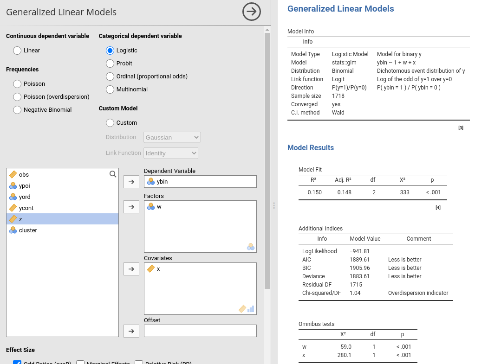
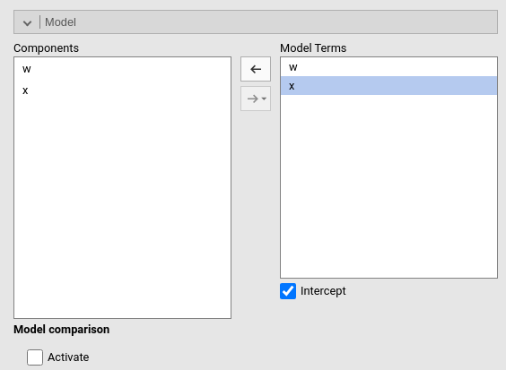
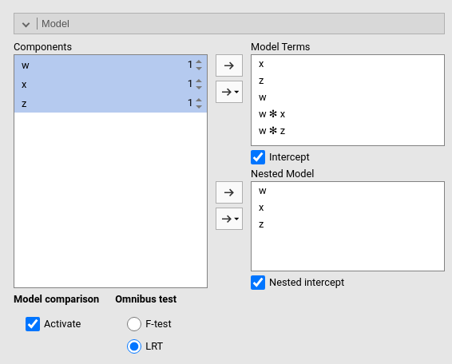
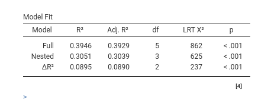
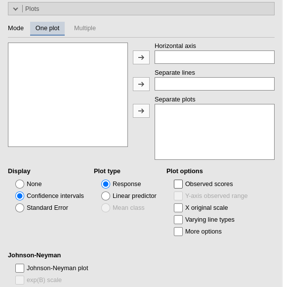
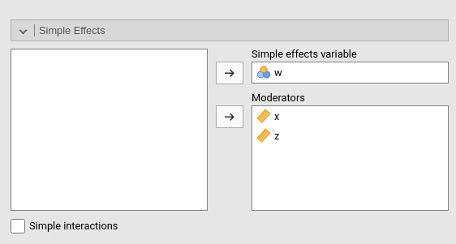
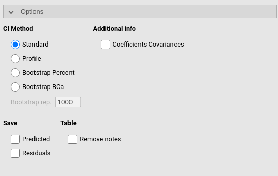

Generalized linear models
Generalized Linear Models module of the GAMLj suite for jamovi
1.6.0

The module estimates generalized linear models with categorial and/or continuous dependent and independent variables, with options to facilitate estimation ofinteractions, simple slopes, simple effects, etc.
Module
The module can estimate several linear models:
- Linear model
- Poisson model
- Poisson overdispersed
- Negative binomial model
- Logistic model
- Probit model
- Ordinal model (proportional odds)
- Multinomial model
- Custom model with combinations of distribution and link function
Models are defined by a link function (LF) and the dependent variable distribution, thus allowing to model different types of dependent variables:
Linear model: identity LF, gaussian distribution, yielding a general linear model for continuous dependent variables.
Poisson model: logarithm LF, Poisson distribution, modelling count dependent variables. This model is often called log-linear model when the independent variables are all categorical.
Poisson (overdispersion) model: Overdispersed Poisson model: logarithm LF, Poisson distribution, quasi-maximum likelihood estimation, with overdispersion, modelling count dependent variables. This model is often used for overdispersed data.
Negative binomial model: logarithm LF, negative binomial distribution, maximum likelihood estimation, with overdispersion, modelling count dependent variables. This model is often used for overdispersed data.
Logistic model: logit LF, binomial distribution, modelling dichotomous dependent variables.
Probit model: inverse of the cumulative normal distribution link function, binomial distribution, modelling dichotomous dependent variables.
Ordinal model: s proportional odds logistic regression, cumlative logit LF, multinomial distribution, modelling ordered dependent variables.
Multinomial model: logit LF, multinomial distribution, modelling categorical dependent variables.
Custom model: combination of distribution family and link function.
The available distributions are:
- Gaussian
- Binomial
- Gamma
- Inverse Gaussian
The available link functions are:
- Identity
- Log
- Inverse
- Inverse squared
The plausibility of the distribution/link function combination is no checked, but errors are issued if the data do not conform to the chosen custom model.

For each model, any combination of categorical and continuous variables can be set as independent variables, thus providing an easy way for multiple regression, ANOVA-like, ANCOVA-like and moderation analysis for categorical and count dependent variables. An Offset variable can be defined, which is included in the model with a fixed coefficient (set to 1) (see )
The options of this panel are:
| Effect Size |
Effect size indices. Odd Rations (default) exponentiates
the coefficients. For dichotomous dependent variables
Relative Risk indices can be obtained.
Marginal Effects computes the marginal effects (if the
model allows).
|
| For exp(B) |
TRUE (default) or FALSE , exp(B) CI in table
|
| For estimates |
TRUE or FALSE (default), coefficients CI in
tables |
| Confidence level | a number between 50 and 99.9 (default: 95) specifying the confidence interval width for the plots. |
| Do not run | If flagged, the results are not updated each time an option is changed. This allows settings complex model options without waiting for the results to update every time. Unflag it when ready to go. |
| Input Method |
The method in which the data are organized. Responses is
the standard method, in which the dependent variable is a dichotomous
variable with two levels. Success/Failure expect the data
to be a table in which two columns are defined, one indicating success
frequencies (level 1) and the other level 0 frequencies (failure
frequencies). P(Success)/Totals expect a columnt of
proportions of success and the weights (Totals) of each proportion.
|
Model
By default, the model terms are filled in automatically for main effects and for interactions with categorical variables.

Interactions between continuous variables or categorical and continuous ones can be set by selecting one or more variables and clicking the second arrow icon.
Polynomial effects for continuous variables can be added to the model. When a variable is selected in the Components field, a little number icon appears on the right side of the selection. The number indicates the order of the effect.

By increasing that number before dragging the term into the Model Terms field, one can include any high order effect. Increasing the order number and combining the selection with other variables allows including interactions involving higher order effects of a variable.
Models comparison
When Activate is flagged, models comparison options become visible.

Two models will be estimated and compared. The current model defined
in Model Terms and the model defined in the
Nested Model field. By default, the
Nested Model terms are empty, so an intercept-only model is
compared with the current. When the user defines nested terms, the
comparison is updated.
Consider the following example:

The current model is composed by three main effects (x,
z and w) and two interactions w*z
and w*z. The nested model terms are only composed by the
main effects (x, z and w). Thus,
the loglikelihood ratio test that it is performed to compare the model
will test the significance of the two interactions together. The output
offers a Table in which each model fit indices and tests are presented,
and the two models comparison test is presented.

The options are:
| Intercept | Estimates fixed intercept if flagged |
| Nested intercept |
TRUE (default) or FALSE, estimates fixed
intercept. Not needed if formula is used.
|
| Activate | Activates models comparison |
| Predictors in precision model | Include the predictors also for the precision phi (beta regression) |
Factors coding

It allows to code the categorical variables according to different coding schemas. The coding schema applies to all parameters estimates. The default coding schema is simple, which is centered to zero and compares each means with the reference category mean. The reference category is the first appearing in the variable levels.
Note that all contrasts but dummy (and custom) guarantee to be centered to zero (intercept being the grand mean), so when involved in interactions the other variables coefficients can be interpret as (main) average effects. If contrast dummy is set, the intercept and the effects of other variables in interactions are estimated for the first group of the categorical IV.
Contrasts definitions are provided in the estimates table. More detailed definitions of the comparisons operated by the contrasts can be obtained by selecting Show contrast definition table.
Differently to standard R naming system, contrasts variables are always named with the name of the factor and progressive numbers from 1 to K-1, where K is the number of levels of the factor.
In reading the contrast labels, one should interpret the
(1,2,3) code as meaning “the mean of the levels 1,2, and 3
pooled together”. If factor levels 1,2 and 3 are all levels of the
factor in the samples, (1,2,3) is equivalent to “the mean
of the sample”. For example, for a three levels factor, a contrast
labeled 1-(1,2,3) means that the contrast is comparing the
mean of level 1 against the mean of the sample. For the same factor, a
contrast labeled 1-(2,3) indicates a comparison between
level 1 mean and the subsequent levels means pooled together.
Custom contrasts weights can be defined by first selecting custom for the variable of interest. Upon choosing
custom for a variable, a new field appears
and we can input the contrast weights we wish to test. Only one contrast
per variable can be defined, but if more contrasts are required one can
always run different analyses, one for each contrast. The coding weights
are input with the simple syntax w1,w2,w3. The other of the
weights follow the other of the factor levels in the datasheet.

Covariates Scaling

Continuous variables can be centered, standardized (z-scores), log-transformed (Log) or used as they are (none). The default is centered because it makes our lives much easier when there are interactions in the model, and do not affect the B coefficients when there are none. Thus, if one is comparing results with other software that does not center the continuous variables, without interactions in the model one would find only a discrepancy in the intercept, because in GAMLj the intercept represents the expected value of the dependent variable for the average value of the independent variable. If one needs to unscale the variable, simply select none.
Covariates conditioning rules how the model is conditioned to different values of the continuous independent variables in the simple effects estimation and in the plots when there is an interaction in the model.
Mean+SD: means that the IV is conditioned to the \(mean\), to \(mean+k \cdot sd\), and to \(mean-k\cdot sd\), where \(k\) is ruled by the white field below the option. Default is 1 SD.
Percentile 50 +offset: means that the IV is conditioned to the \(median\), the \(median+k P\), and the \(median-k\cdot P\), where \(P\) is the offset of percentile one needs. Again, the \(P\) is ruled by the white field below the option. The offset should be within 5 and 50, default is 25%. The default conditions the model to:
\(50^{th}-25^{th}=25^{th}\) percentile
\(50^{th}\) percentile
\(50^{th}+25^{th}=75^{th}\) percentile
Min to Max: The IV is conditioned to its \(min\), \(max\) and a number of values in between, ruled by
Steps. ForSteps=1only \(min\) and \(max\) are used. ForSteps=2, one value in the middle is also used, and so on.
Covariates labeling decides which label should be associated with the estimates and plots of simple effects as follows:
Labels produces strings of the form \(Mean \pm SD\).
Values uses the actual values of the variables, after scaling.
Labels+Values produces labels of the form \(Mean \pm SD=XXXX\), where
XXXXis the actual value.Unscaled Values produces labels indicating the actual value (of the mean and sd) of the original variable scale. This can be useful, for instance, when the user needs the estimates to be obtained with centered variables (because there are interactions, for instance), but the plot of the effects is preferred in the original scales of the moderators.
Unscaled Values + Labels as the previous option, but add also the label “Mean” and “SD” to the original values.
The Scaling on option decides how the
scaling of the variables handle missing values: First, keep in mind that
the model will be estimated on complete cases, no matter how this option
is set. When there are missing values, however, one can scale each
variable only on the complete cases (the default), or scale
columnwise. If columnwise is selected, the
mean and standard deviation of each variable used to scale the scores
are computed with the available data of the variable, independently of
possible missing values in other variables.
Post-hocs

Post-hoc tests can be accomplished for the categorical variables groups by selecting the appropriated factor and flag the required tests
Post-hoc tests are implemented based on R package emmeans. All tecnical info can be found here
Plots

The “plots” menu allows for plotting main effects and interactions for any combination of types of variables, making it easy to plot interaction means plots, simple slopes, and combinations of them. The best plot is chosen automatically.
By filling in Horizontal axis one obtains the group means of the selected factor or the regression line for the selected covariate.
By filling in Horizontal axis and Separated lines one obtains a different plot depending on the type of variables selected:
- Horizontal axis and Separated lines are both factors, one obtains the interaction plot of group means.
- Horizontal axis is a factor and Separated lines is a covariate. One obtains the plot of group means of the factor estimated at three different levels of the covariate. The levels are decided by the Covariates conditioning options above.
- Horizontal axis and Separated lines are covariates. One obtains the simple slopes graph of the simple slopes of the variable in horizontal axis estimated at three different levels of the covariate.
By filling in Separate plots one can
probe higher-order interactions. If the selected variable is a factor,
one obtains a two-way graph (as previously defined) for each level of
the “Separate plots” variable. If the selected variable is a covariate,
one obtains a two-way graph (as previously defined) for the
Separate plots variable centered to conditioning values
selected in the Covariates conditioning
options. Any number of plots can be obtained depending on the order of
the interaction.
Plots interpretation varies depending on the model being estimated. All plots are, however, depicting predicted values in the response original scale (usually probabilities). See details and interpretation discussion.
The options are:
| Display |
'None' (default), Confidence Intervals, or
Standard Error. Display on plots no error bars, use
confidence intervals, or use standard errors on the plots, respectively.
|
| Y-axis scale |
Plot ordinal model predicted values in as probabilities
(response) or predicted class (mean.class)
|
| Observed scores |
TRUE or FALSE (default), plot raw data along
the predicted values
|
| Y-axis observed range |
TRUE or FALSE (default), set the Y-axis range
equal to the range of the observed values.
|
| X original scale |
If selected, the X-axis variable is scaled with the orginal scale of the
variable, independently to the scaling set is the
Covariates Scaling.
|
| Varying line types | If selected, a black and white theme is set for the plot, with multiple lines (if present) drawn in different styles. |
| Johnson-Neyman plot | Produces the Johnson-Neyman plot for simple slopes significance. |
| exp(B) scale | plots the the exp(B) (odd-ratio) in the Johnson-Neyman plot. |
Simple Effects

Simple effects can be computed for any combination of types of variables, making it easy to probe interactions, simple slopes, and combinations of them. Simple effects can estimated up to any order of interaction. If only one moderator is set in the Moderators field, the effect of the variable in the Simple effects variable is computed at different levels of the moderator. If more than one moderator is defined, the effects are estimated for all combinations of the moderator levels.
Simple effects are computed following the same logic of the plots. They correspond to the plotted effects as defined above. As for plots, the effects are estimated for different levels of the categorical moderators and for the conditioning values of the continuous moderators defined in Covariates Scaling panel.
When there is more than one moderator, one can activate Simple interactions to obtain estimation and tests
for lower order interactions at different levels of a moderator. Simple
interactions are computed using the last variable appearing in the Moderators field as moderator. In the case
depicted in the figure above, the interaction w*x is
estimated and tested at different levels of z.
Estimated marginal means

Print the estimate expected means, SE, df and confidence intervals of
the predicted dependent variable by factors in the model. Any
combination available in the model (main effects, interactions,
non-linear terms), can be requested. If the term involves categorical
independent variables, means of each level of the variable are
presented. If the term involves continuous variables, expected means
computed at the levels defined in Covariate Scaling are
presented.
Options

| CI Method |
The method used to compute the confidence intervals.
Standard uses the Wald method to compute standard errors
and confidence intervals. Profile computes Profile
Likelihood Based Confidence Interval, in which the bounds are chosen
based on the percentiles of the chi-square distribution around the
maximum likelihood estimate. Bootstrap percent performs a
non-parametric boostrap, with Bootstrap rep repetitions,
and compute the CI based on the percentiles of the boostrap
distribution. The BCa implements the bias-corrected
bootstrap method.
|
| Bootstrap rep. | The number bootstrap repetitions. |
| Coefficients Covariances |
TRUE or FALSE (default), shows coefficients
covariances
|
| Classification Table | Produces a classification table (predicted vs observed) |
| Parallel lines test | Test parallel lines assumptions in cumulative link model (ordinal regression) |
| Remove notes | Removes all notes and warnings from the Tables. Useful to produce pubblication quality tables. |
Saving and exports

| Predicted |
Saves the predicted values of the model. Predicted values are always
scaled in the dependent variable original scale, that in the majority of
cases is the probability scale. For Poisson models and
Negative Binomial the count scale is used.
|
| Residuals | Saves the residual values of the model. The response scale is used. |
| Estimated Marginal Means | Export estimated marginal means in a new jamovi file, one dataset for each table |
| Plot data | Export data displayed in the plots, one dataset for each plot. |
Examples
Some worked out practical examples can be found here
Details
Some more information about the module specs can be found here
Comparison with other software
Not yet present
Return to main help pages
Main page
Comments?
Got comments, issues or spotted a bug? Please open an issue on GAMLj at github or send me an email